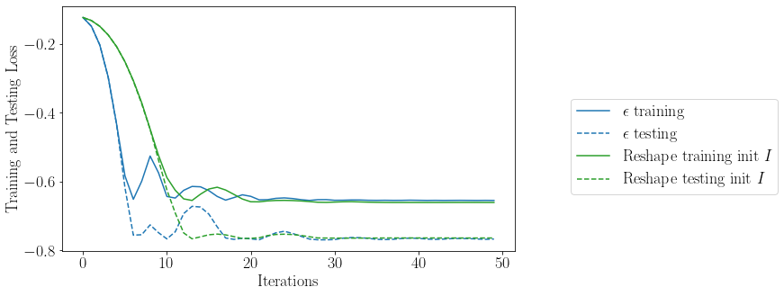

[209]:
import scipy as sc
from sklearn import datasets
from matplotlib.style import available
from sklearn.cluster import KMeans
import numpy as np
import cvxpy as cp
import torch
import time
from cvxpylayers.torch import CvxpyLayer
import matplotlib.pyplot as plt
from sklearn.model_selection import train_test_split
import pandas as pd
import warnings
import mosek
warnings.filterwarnings('ignore')
plt.rcParams.update({
"text.usetex":True,
"font.size":18,
"font.family": "serif"
})
colors = ["tab:blue", "tab:green", "tab:orange",
"tab:red", "tab:purple", "tab:brown", "tab:pink", "tab:grey", "tab:olive","tab:blue", "tab:orange", "tab:green",
"tab:red", "tab:purple", "tab:brown", "tab:pink", "tab:grey", "tab:olive"]
[210]:
def createproblem_quad(n, P_inv):
# PARAMETERS #
A = cp.Parameter((n,n))
b = cp.Parameter(n)
# VARIABLES #
# weights, s_i, lambda, tau
x = cp.Variable(n)
t = cp.Variable()
z = cp.Variable(n)
y = cp.Variable((n,n))
gam = cp.Variable(n)
# OBJECTIVE #
objective = t
# CONSTRAINTS #
constraints = [cp.sum([cp.quad_over_lin(y[i]@P_inv[i],2*x[i]) for i in range(n)]) + b@z + cp.norm(gam,2) <= t]
constraints += [A.T@gam == z]
constraints += [cp.sum(y, axis = 1) == z]
constraints += [cp.sum(x) == 1]
constraints += [x >= 0, x <= 1]
# PROBLEM #
problem = cp.Problem(cp.Minimize(objective), constraints)
return problem, x, t, A, b
def normal_returns(m, N):
R = np.vstack([np.random.normal(
i*0.03, np.sqrt((0.02**2+(i*0.025)**2)), N) for i in range(1, m+1)])
return (R.transpose())
def normal_returns1(m, N):
R = np.vstack([np.random.normal(
i*0.05, np.sqrt((0.01**2+(i*0.035)**2)), N) for i in range(1, m+1)])
return (R.transpose())
def loss(x,t,data,l = 1):
cur_sum = 0
for i in range(data.shape[0]):
cur_sum = cur_sum + torch.maximum(torch.sum(torch.tensor([-0.5*data[i]@torch.tensor(P[ind],requires_grad = True)
*x[ind]@data[i] for ind in range(m)], requires_grad = True)) - t,
torch.tensor(0., requires_grad=True))
return t + l*cur_sum/data.shape[0], t, cur_sum/data.shape[0]
[211]:
loss(torch.tensor(5*np.ones(m)),torch.tensor(1),val_dset)
[211]:
(tensor(1., dtype=torch.float64, grad_fn=<AddBackward0>),
tensor(1),
tensor(0., dtype=torch.float64, grad_fn=<DivBackward0>))
[222]:
P = {}
P_inv = {}
m = 15
N = 100
for i in range(m):
P[i] = datasets.make_spd_matrix(m, random_state=i)
P_inv[i] = sc.linalg.sqrtm(np.linalg.inv(P[i]))
d1 = normal_returns(m,N)
d2 = normal_returns1(m,N)
data = np.concatenate((d1,d2))
[223]:
w = 5
problem, x,t,A,b = createproblem_quad(m, P_inv)
df1 = pd.DataFrame(columns=["step", "Opt_val", "Violations1", "Violations2","Eval_val", "Loss_val", "A_norm"])
train, test = train_test_split(data, test_size=int(data.shape[0]/5), random_state=16)
val_dset = torch.tensor(train, requires_grad=True)
eval_set = torch.tensor(test, requires_grad=True)
# create cvxpylayer
cvxpylayer = CvxpyLayer(problem, parameters=[A, b], variables= [x, t])
init = sc.linalg.sqrtm(sc.linalg.inv(np.cov(train.T)))
paramb_tch = torch.tensor(-init@np.mean(train, axis=0), requires_grad=True)
paramT_tch = torch.tensor(init, requires_grad=True)
variables = [paramT_tch, paramb_tch]
opt = torch.optim.SGD(variables, lr=0.01, momentum=0.8)
step = 50
for steps in range(step):
var_values = cvxpylayer(paramT_tch, paramb_tch, solver_args={'solve_method': 'ECOS'})
totloss, obj, v1 = loss(*var_values, val_dset, l= w)
evalloss, _, v2 = loss(*var_values, eval_set, l = w)
totloss.backward()
newrow = pd.Series(
{"step": steps,
"Loss_val": totloss.item(),
"Eval_val": evalloss.item(),
"Opt_val": obj.item(),
"Violations1": v1.item(),
"Violations2": v2.item(),
"A_norm": np.linalg.norm(paramT_tch.detach().numpy().copy())
})
df1 = pd.concat([df1, newrow.to_frame().T], ignore_index=True)
if steps < step - 1:
opt.step()
opt.zero_grad()
problem, x,t,A,b = createproblem_quad(m, P_inv)
cvxpylayer = CvxpyLayer(problem, parameters=[A, b], variables= [x, t])
df2 = pd.DataFrame(columns=["step", "Opt_val", "Violations1", "Violations2","Eval_val", "Loss_val", "A_norm"])
init = np.eye(m)
paramb_tch = torch.tensor(-init@np.mean(train, axis=0), requires_grad=True)
paramT_tch = torch.tensor(init, requires_grad=True)
variables = [paramT_tch, paramb_tch]
opt = torch.optim.SGD(variables, lr=0.01, momentum=0.8)
step = 50
for steps in range(step):
var_values = cvxpylayer(paramT_tch, paramb_tch, solver_args={'solve_method': 'ECOS'})
totloss, obj, v1 = loss(*var_values, val_dset, l=w)
evalloss, _, v2 = loss(*var_values, eval_set, l=w)
totloss.backward()
newrow = pd.Series(
{"step": steps,
"Loss_val": totloss.item(),
"Eval_val": evalloss.item(),
"Opt_val": obj.item(),
"Violations1": v1.item(),
"Violations2": v2.item(),
"A_norm": np.linalg.norm(paramT_tch.detach().numpy().copy())
})
df2 = pd.concat([df2, newrow.to_frame().T], ignore_index=True)
if steps < step - 1:
opt.step()
opt.zero_grad()
problem, x,t,A,b = createproblem_quad(m, P_inv)
cvxpylayer = CvxpyLayer(problem, parameters=[A, b], variables= [x, t])
df_eps = pd.DataFrame(columns=["step", "Opt_val", "Violations1", "Violations2","Eval_val", "Loss_val", "A_norm"])
eps_tch = torch.tensor(1/1, requires_grad=True)
paramb_tch = eps_tch*torch.tensor(-np.mean(train, axis=0), requires_grad=True)
paramT_tch = eps_tch*torch.tensor(np.eye(train.shape[1]), requires_grad=True)
variables = [eps_tch]
opt = torch.optim.SGD(variables, lr=0.01, momentum=0.8)
step = 50
for steps in range(step):
paramb_tch = eps_tch*torch.tensor(-np.mean(train, axis=0), requires_grad=True)
paramT_tch = eps_tch*torch.tensor(np.eye(train.shape[1]), requires_grad=True)
var_values = cvxpylayer(paramT_tch, paramb_tch, solver_args={'solve_method': 'ECOS'})
totloss, obj, v1 = loss(*var_values, val_dset, l=w)
evalloss, _, v2 = loss(*var_values, eval_set, l=w)
totloss.backward()
newrow = pd.Series(
{"step": steps,
"Loss_val": totloss.item(),
"Eval_val": evalloss.item(),
"Opt_val": obj.item(),
"Violations1": v1.item(),
"Violations2": v2.item(),
"A_norm": eps_tch.detach().numpy().copy()
})
df_eps = pd.concat([df_eps, newrow.to_frame().T], ignore_index=True)
if steps < step - 1:
opt.step()
opt.zero_grad()
[224]:
plt.figure(figsize=(9, 5))
plt.plot(df_eps['step'], df_eps['Loss_val'], color="tab:blue", label=r"$\epsilon$ training")
plt.plot(df_eps['step'], df_eps['Eval_val'], linestyle='--', color="tab:blue", label=r"$\epsilon$ testing")
# plt.plot(df1['step'], df1['Loss_val'], color="tab:orange", label="Reshape training init $\Sigma^{-1/2}$")
# plt.plot(df1['step'], df1['Eval_val'], linestyle='--', color="tab:orange", label="Reshape testing init $\Sigma^{-1/2}$")
plt.plot(df2['step'], df2['Loss_val'], color="tab:green", label="Reshape training init $I$")
plt.plot(df2['step'], df2['Eval_val'], linestyle='--', color="tab:green", label="Reshape testing init $I$")
plt.legend(loc="lower right", bbox_to_anchor=(1.6, 0.2))
plt.xlabel("Iterations")
plt.ylabel("Training and Testing Loss")
plt.savefig("plot.pdf")

[199]:
df_eps.to_csv('df_eps.csv')
df2.to_csv('df_R_I.csv')
df1.to_csv('df_R_C.csv')
[221]:
df_eps
[221]:
| step | Opt_val | Violations1 | Violations2 | Eval_val | Loss_val | A_norm | |
|---|---|---|---|---|---|---|---|
| 0 | 0 | -0.167884 | 0.0 | 0.0 | -0.167884 | -0.167884 | 1.0 |
| 1 | 1 | -0.206825 | 0.0 | 0.0 | -0.206825 | -0.206825 | 1.019239 |
| 2 | 2 | -0.291613 | 0.0 | 0.0 | -0.291613 | -0.291613 | 1.055871 |
| 3 | 3 | -0.443507 | 0.001985 | 0.000411 | -0.44145 | -0.433582 | 1.110233 |
| 4 | 4 | -0.686957 | 0.013876 | 0.016657 | -0.603672 | -0.617577 | 1.1807393 |
| 5 | 5 | -1.028322 | 0.06258 | 0.06488 | -0.70392 | -0.71542 | 1.2610352 |
| 6 | 6 | -1.337795 | 0.145449 | 0.147241 | -0.601591 | -0.610548 | 1.3223374 |
| 7 | 7 | -1.45943 | 0.186225 | 0.189558 | -0.51164 | -0.528305 | 1.3443513 |
| 8 | 8 | -1.32313 | 0.141014 | 0.142577 | -0.610248 | -0.61806 | 1.319617 |
| 9 | 9 | -1.08507 | 0.075639 | 0.075503 | -0.707555 | -0.706873 | 1.2729485 |
| 10 | 10 | -0.879669 | 0.035234 | 0.04174 | -0.670967 | -0.703501 | 1.228066 |
| 11 | 11 | -0.785537 | 0.023439 | 0.027524 | -0.647918 | -0.668342 | 1.2056776 |
| 12 | 12 | -0.79059 | 0.024017 | 0.028247 | -0.649357 | -0.670506 | 1.2069126 |
| 13 | 13 | -0.870013 | 0.033882 | 0.040278 | -0.668625 | -0.700605 | 1.2258275 |
| 14 | 14 | -0.997423 | 0.056095 | 0.059582 | -0.699511 | -0.71695 | 1.2544006 |
| 15 | 15 | -1.105998 | 0.080497 | 0.080799 | -0.702003 | -0.703513 | 1.2772591 |
| 16 | 16 | -1.143476 | 0.089972 | 0.091413 | -0.686412 | -0.693618 | 1.2848724 |
| 17 | 17 | -1.097155 | 0.078407 | 0.078418 | -0.705064 | -0.705118 | 1.275443 |
| 18 | 18 | -1.017805 | 0.060354 | 0.062982 | -0.702894 | -0.716036 | 1.2587892 |
| 19 | 19 | -0.950023 | 0.046834 | 0.0524 | -0.688024 | -0.715855 | 1.244007 |
| 20 | 20 | -0.916108 | 0.040751 | 0.047261 | -0.679803 | -0.712353 | 1.2364018 |
| 21 | 21 | -0.913625 | 0.040317 | 0.046885 | -0.679201 | -0.712038 | 1.2358392 |
| 22 | 22 | -0.942272 | 0.045407 | 0.051225 | -0.686145 | -0.715237 | 1.2422816 |
| 23 | 23 | -0.991142 | 0.05481 | 0.058631 | -0.697989 | -0.717094 | 1.2530386 |
| 24 | 24 | -1.031185 | 0.063206 | 0.065397 | -0.704199 | -0.715154 | 1.2616444 |
| 25 | 25 | -1.035924 | 0.064324 | 0.066252 | -0.704661 | -0.714304 | 1.262651 |
| 26 | 26 | -1.005246 | 0.05771 | 0.060768 | -0.701406 | -0.716697 | 1.2560905 |
| 27 | 27 | -0.974432 | 0.051483 | 0.056099 | -0.693939 | -0.717017 | 1.2493926 |
| 28 | 28 | -0.956577 | 0.048043 | 0.053393 | -0.689612 | -0.716361 | 1.24546 |
| 29 | 29 | -0.961507 | 0.048979 | 0.05414 | -0.690807 | -0.716611 | 1.2465498 |
| 30 | 30 | -0.978363 | 0.052261 | 0.056694 | -0.694891 | -0.71706 | 1.2502532 |
| 31 | 31 | -0.998551 | 0.056325 | 0.059753 | -0.699784 | -0.716924 | 1.2546448 |
| 32 | 32 | -1.01486 | 0.059734 | 0.062451 | -0.702606 | -0.71619 | 1.258158 |
| 33 | 33 | -1.021182 | 0.061065 | 0.063592 | -0.703224 | -0.715858 | 1.2595116 |
| 34 | 34 | -1.01941 | 0.060692 | 0.063272 | -0.703051 | -0.715952 | 1.2591326 |
| 35 | 35 | -1.011186 | 0.05896 | 0.061788 | -0.702247 | -0.716383 | 1.257369 |
| 36 | 36 | -0.997901 | 0.056192 | 0.059655 | -0.699627 | -0.716939 | 1.254504 |
| 37 | 37 | -0.98734 | 0.054036 | 0.058054 | -0.697068 | -0.717158 | 1.2522119 |
| 38 | 38 | -0.985513 | 0.053675 | 0.057778 | -0.696625 | -0.717139 | 1.2518141 |
| 39 | 39 | -0.990643 | 0.054708 | 0.058555 | -0.697868 | -0.717105 | 1.2529302 |
| 40 | 40 | -0.994757 | 0.055549 | 0.059178 | -0.698865 | -0.717011 | 1.253823 |
| 41 | 41 | -0.998055 | 0.056224 | 0.059678 | -0.699664 | -0.716935 | 1.2545373 |
| 42 | 42 | -1.000697 | 0.056765 | 0.060079 | -0.700302 | -0.716872 | 1.2551087 |
| 43 | 43 | -1.002814 | 0.057198 | 0.0604 | -0.700816 | -0.716822 | 1.2555659 |
| 44 | 44 | -0.997808 | 0.056173 | 0.059641 | -0.699604 | -0.716941 | 1.2544839 |
| 45 | 45 | -0.993813 | 0.055356 | 0.059035 | -0.698637 | -0.717033 | 1.2536184 |
| 46 | 46 | -0.990623 | 0.054703 | 0.058552 | -0.697864 | -0.717106 | 1.2529259 |
| 47 | 47 | -0.988075 | 0.054182 | 0.058166 | -0.697246 | -0.717164 | 1.2523719 |
| 48 | 48 | -0.986039 | 0.053779 | 0.057857 | -0.696753 | -0.717144 | 1.2519287 |
| 49 | 49 | -0.991005 | 0.054782 | 0.05861 | -0.697956 | -0.717097 | 1.2530088 |
[ ]: